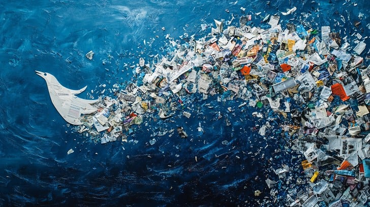

Ocean life is incredibly diverse, from microscopic plankton to massive whales. Preservation efforts are crucial to maintain this biodiversity. Marine protected areas, sustainable fishing practices, and reducing pollution are key strategies. Protecting coral reefs, which are vital habitats, is also essential.
Many organizations work tirelessly to protect endangered species and restore damaged ecosystems. Individual actions, such as reducing plastic use and supporting sustainable seafood, can also make a significant impact.
Ocean Pollution

Ocean pollution, particularly plastic waste, is a major threat to marine life. Plastics break down into microplastics, which are ingested by marine animals, causing harm and even death. Chemical pollutants from industrial and agricultural runoff also contaminate the ocean, affecting water quality and marine ecosystems.
Reducing plastic consumption, proper waste disposal, and implementing stricter regulations on industrial discharges are crucial steps in combating ocean pollution.
Overfishing
Overfishing occurs when fish are caught faster than they can reproduce, leading to population declines and ecosystem imbalances. This practice disrupts food chains and affects the livelihoods of coastal communities. Sustainable fishing practices, such as catch limits, protected areas, and responsible fishing gear, are necessary to ensure healthy fish populations.
Consumers can support sustainable fisheries by choosing seafood from certified sources and avoiding overexploited species.
Climate Change and Oceans
Climate change is causing significant impacts on the oceans, including rising sea levels, ocean acidification, and changes in water temperature. Ocean acidification, caused by increased carbon dioxide absorption, affects the ability of marine organisms to form shells and skeletons. Rising temperatures lead to coral bleaching and alter marine species distributions.
Reducing greenhouse gas emissions and transitioning to renewable energy sources are critical to mitigating the effects of climate change on the oceans.